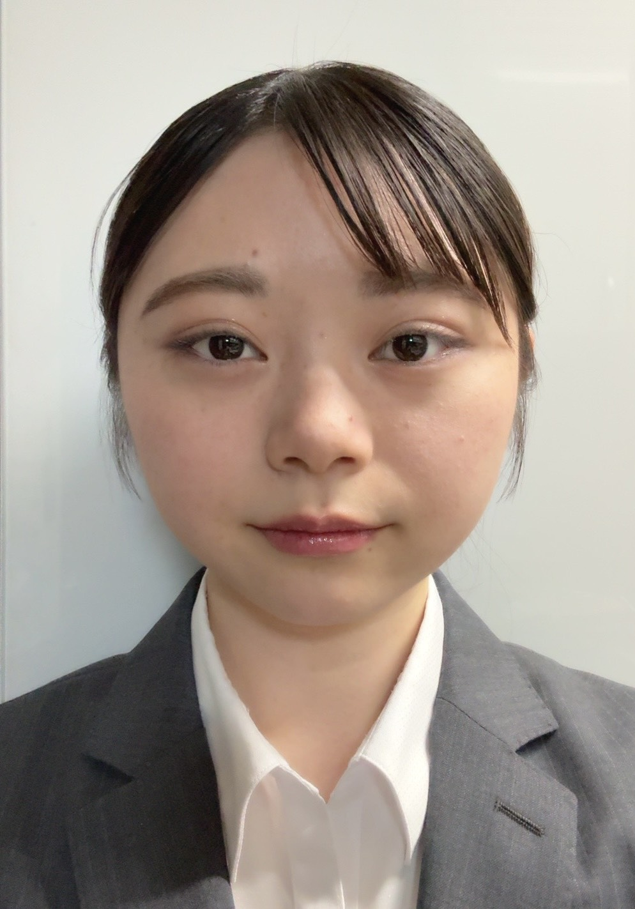

SONOKA SHIGA
自己紹介

IT分野に興味を持ち、現在大学で情報通信技術やプログラミングを学習しています。
また、Pythonを用いたアプリ制作を行い、実用性を意識した開発に取り組んでいます。
経歴
- 2021年4月 工学院大学付属高等学校 入学
- 2024年3月 工学院大学付属高等学校 卒業
- 2024年4月 工学院大学情報学部情報通信工学科 入学
スキル
-programming Languages-
-
Java/C言語
大学課程で基本的な文法を習得 -
Python
「タスク管理アプリ」製作に使用
-Tools-
- Blender
- Filmora
-Certifications-
- ITパスポート
- 基本情報技術者
製作物

タスク管理アプリ
タスクの追加・削除・日付管理・並び替え機能を実装しました。
Enterキーでも追加可能で使いやすさを意識しました。
タスク管理アプリをダウンロード（Windows環境で動作確認済み）